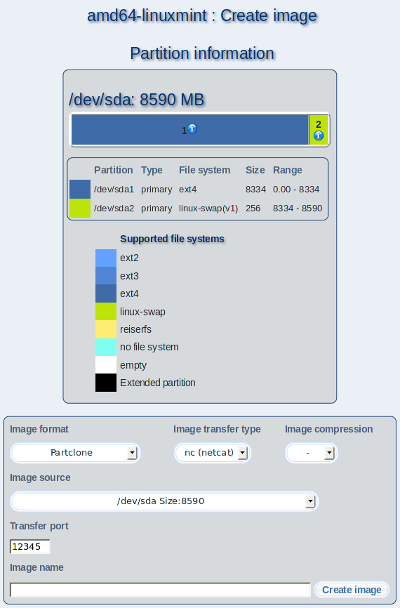

You can create images from a partition or a whole drive of your client in this dialog. This image can be used to install clients. Select your preferred Image format, the Image transfer type and the Image compression. You have to make additional designations under "Image source" for some image formats e.g. the partition or drive that should be stored in the image.
Choose a name for the image and enter it at "Image name". Click on "Create image" afterwards.
Subsections
dodger
2012-11-22